About Me
Xin chào cả nhà! Mình là Đặng Đức Duy, biệt danh DAN_D – một coder trẻ, nhiệt huyết, và hơi bị "mê" công nghệ đến mức ăn code, ngủ cũng mơ thấy dấu chấm phẩy! 😜 Hành trình lập trình của mình bắt đầu từ năm lớp 9, khi mình "bén duyên" với Python – tình đầu của mọi coder. Từ đó, mình lấn sân sang cả lập trình nhúng, AI, và điện tử, như một siêu anh hùng công nghệ nhảy múa giữa các lĩnh vực! Lập trình với mình không chỉ là gõ code giải bài toán, mà còn là sân chơi để mình tung hoành sáng tạo, biến những ý tưởng "điên rồ" thành hiện thực. Từ các dự án nho nhỏ kiểu "tự học tự sướng" cho đến những nghiên cứu khoa học hoành tráng, mình đều lao vào với 200% năng lượng. Yêu thích nhất? Đó là kết hợp công nghệ với vibe khởi nghiệp – biến những giấc mơ "to bự" thành sản phẩm cụ thể, từ hệ thống thu gom rác thông minh WasterClean AI (nghe xịn chưa?), đến hệ thống cảnh báo siêu ngầu, hay các mô hình STEM từng làm mưa làm gió ở trường học. Mỗi dòng code mình viết là một mảnh ghép nhỏ xây nên tương lai mà mình mơ ước – nơi công nghệ không chỉ "cool" mà còn giúp cuộc sống xanh hơn, tiện hơn, và bớt drama hơn! 😎 Mình luôn sẵn sàng kết nối, học hỏi, và "quậy" cùng mọi người để tạo ra những thứ khác biệt, đậm chất DAN_D. Ai muốn cùng mình viết tiếp câu chuyện công nghệ này, giơ tay nào! 🚀
 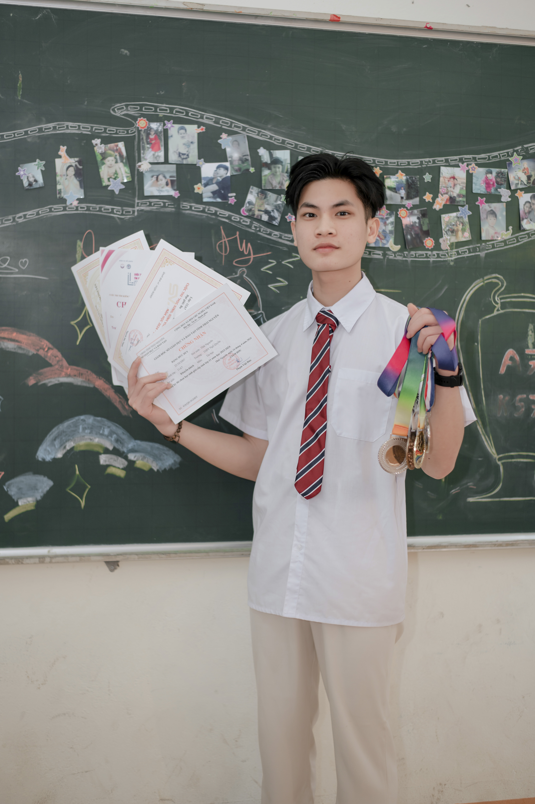
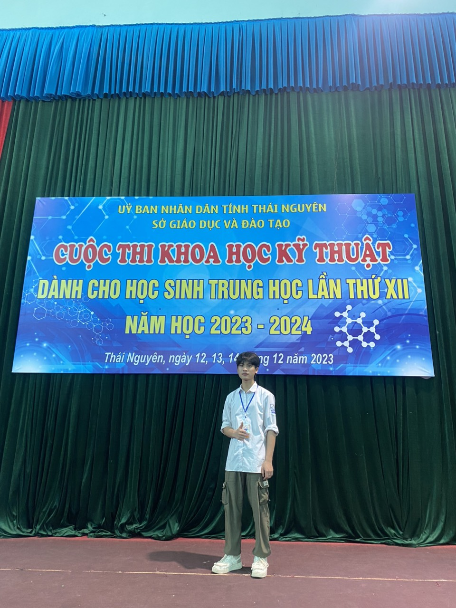
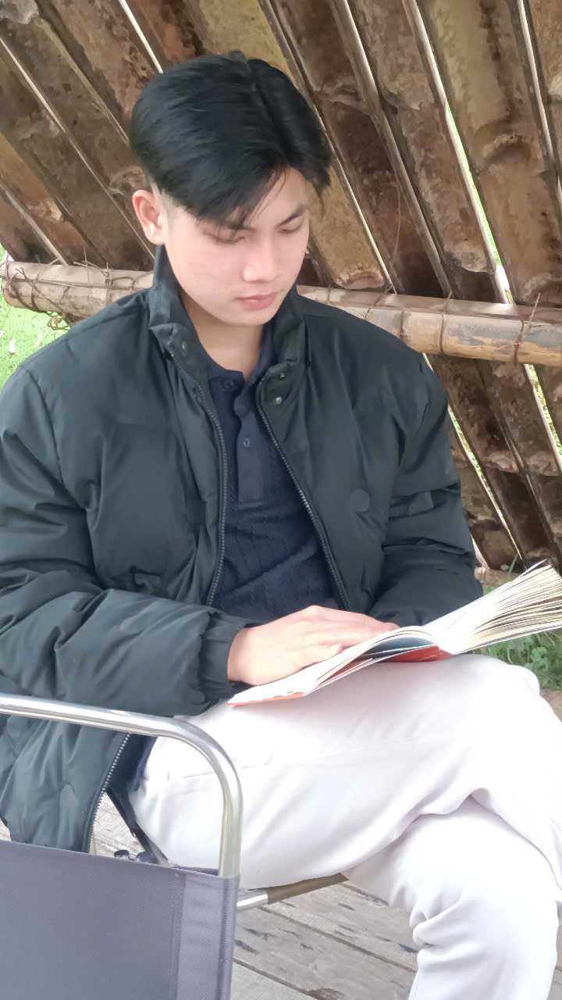
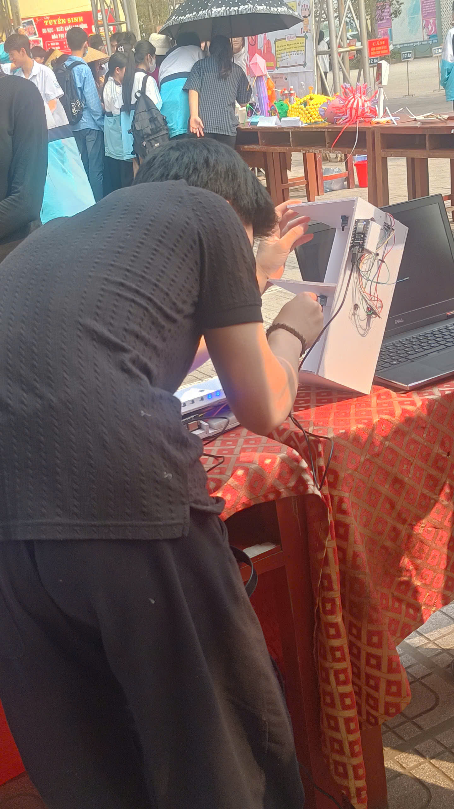
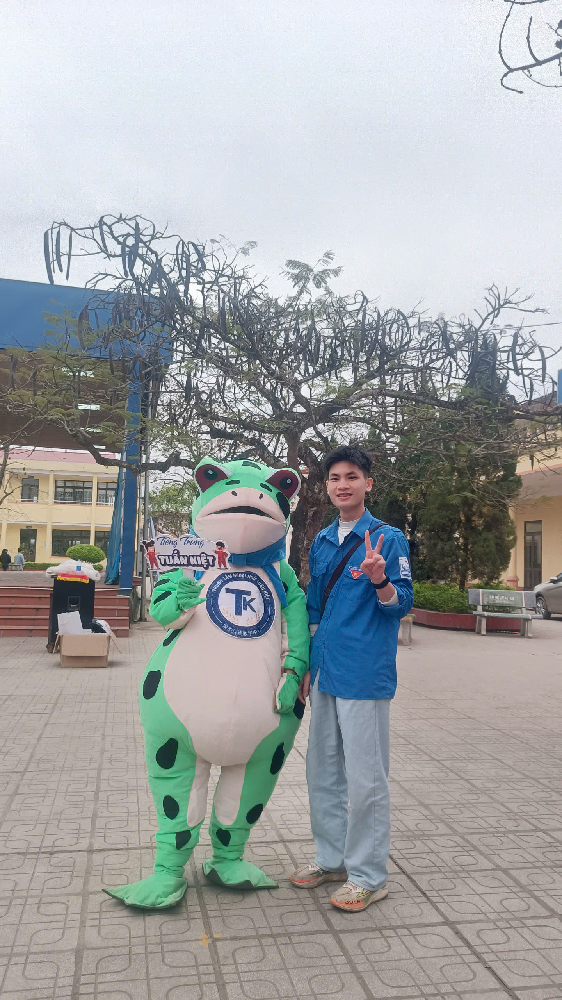
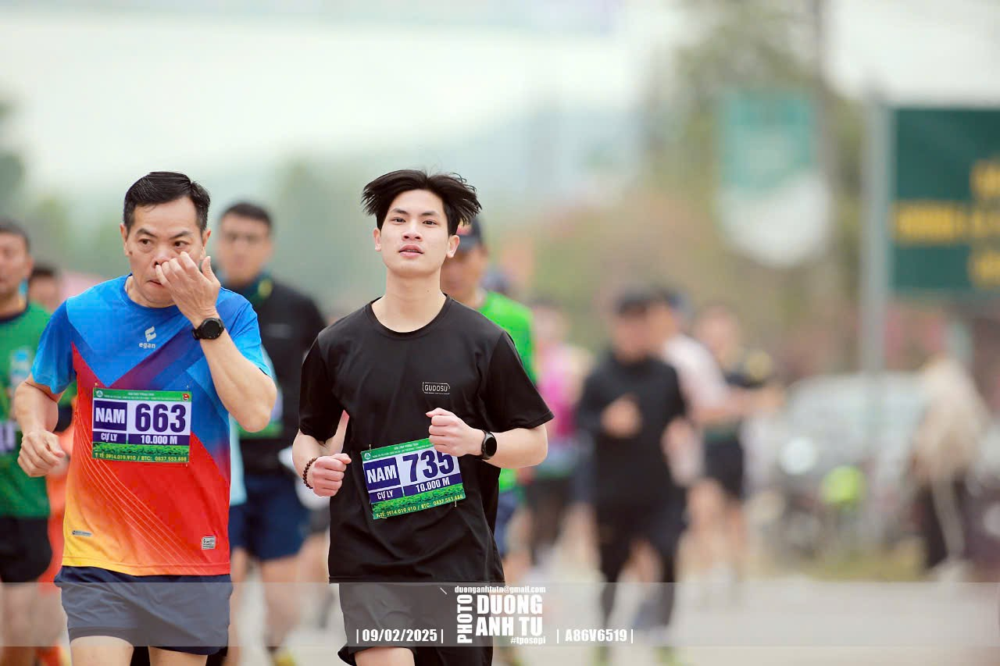
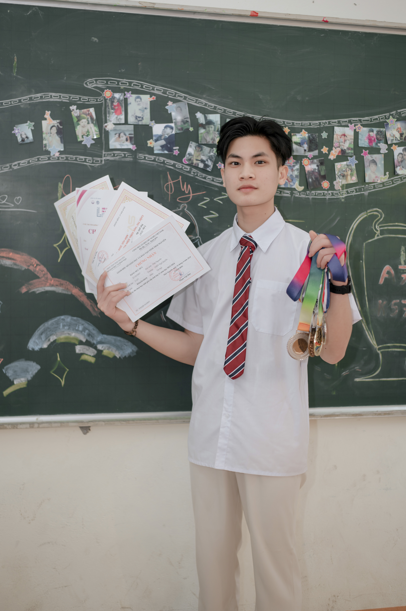
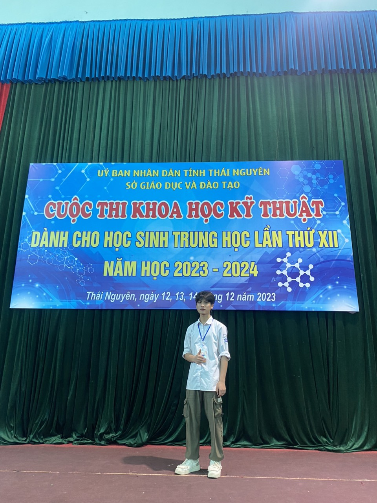
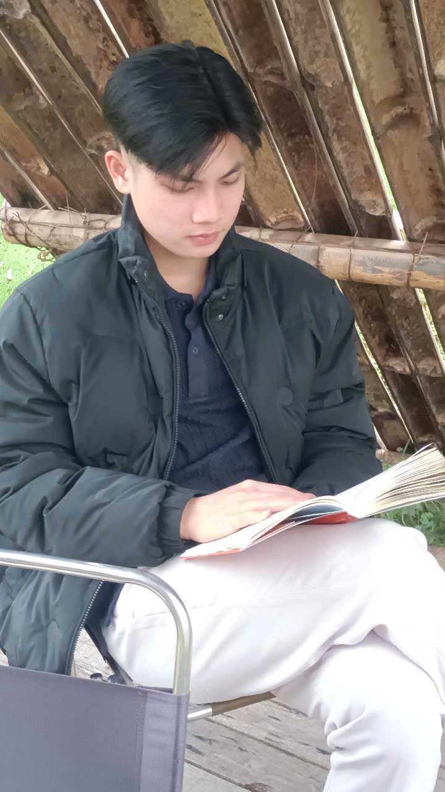
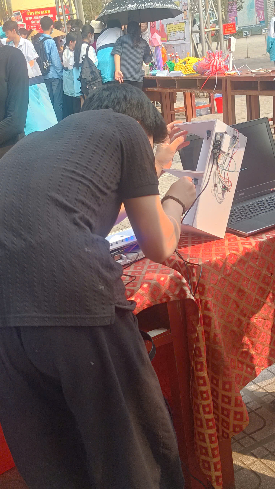
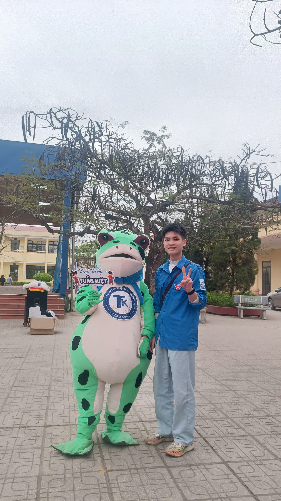
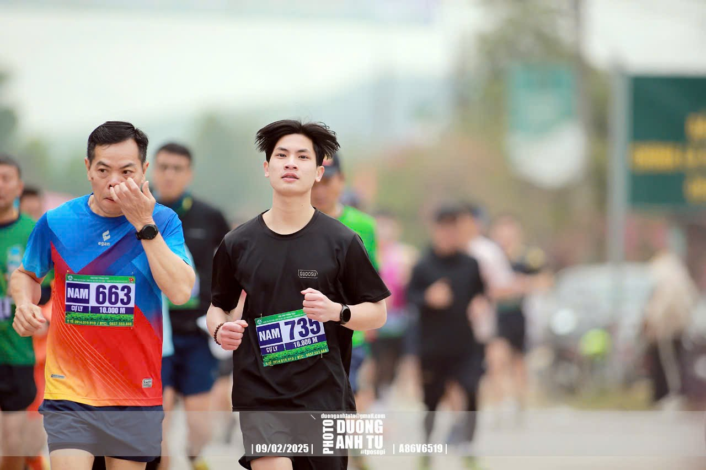